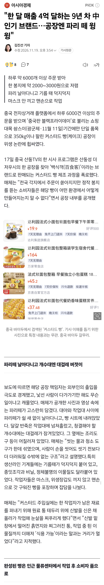
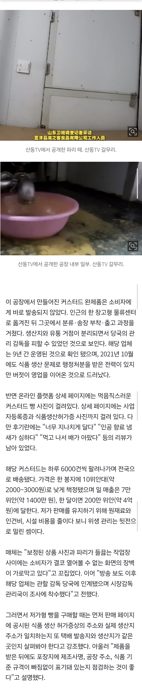
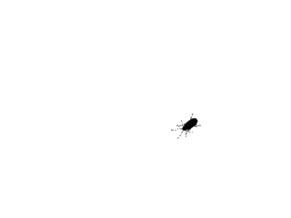

요새 수입해서 판다는 중국산 천원빵은 과연..ㄷㄷ


요새 수입해서 판다는 중국산 천원빵은 과연..ㄷㄷ


알리에서 팔지만 국내제품 국내생산 국내배송인것들고 잇긴해
그런건 시키면 다음날 오더라
전자기기도 아니고 중국지 음식을?
파리떼 파리떼 윙-윙-
먹을걸 중국에서 직구해오는 사람이 있긴 한가...??
중국산 저가 수입빵이랑 과자 마트에 널렸음
https://www.sedaily.com/article/20107203
동네마트 삼립빵 자리에 요즘 중국 빵들이 거의 자리차리하더라
월병이라고 중국과자예요. 드셔보셨나 모르겠는 데 제법 맛이 납니다.
네, 많이 드십시요
드립모름?
내 닉 모름?
아 짱이구나.
닉만 짱.깨임
야 이건 뭐...어떻게 먹는거야? 이건 먹는거 아닌거 같은데?
거 드셔도 돼요. 깨끗하게 세탁 했어요.
중국은 과자를 세탁까지해서 먹어야 하는구나...
커뮤에는 저런거만 가져와서 그렇지 중국도 위생법 까다로움 정상적인 1~2선 도시에선 구경조차 못함
식당들도 거의 오픈 주방이고 엄청 깔끔해
대륙의 파리위애앵들
파리’지에엥’

중국에서 10위안이면 밥한끼값인데 저게 저렴하다고? ㅋㅋㅋ
중국과자 편의점에 널려있음
편의점 중국 빵은 다를까..?
천원빵집에서 잘 모르고 중국빵 몇개 집어와서 먹어봤는데
진심 두입 정도 먹고 싹다 버렸음
내가 웬만해선 먹을거 안버리는데 정말 못먹겠더라
이마트에서도 중국산 과자/빵 겁나 수입해서 파는데 뭐 ㅋㅋㅋ
아 무인 천원빵 매장 이런 거 생기더니 중국산임?
퇴근하는 길목에 있길래 학교 매점에서 팔던 그런 빵 파나? 그러면 추억돋겠다 히히 하면서 나중에 가봐야지 했는데... 안갈래...
국내에서 만드는 것도 있어...
천원빵집에서 수입품은 거의 중국꺼고 빵사랑이나 코알라는 국산인데 먹을만함
들어가서 뒤적이며 국산품만 찾고 있기도 웃길 것 같은데... 에이 그래도 매점빵 느낌 끌리면 언젠가 한 번 가봐야지
쌀과자도 거의 대부분 중국생산이라던데
오우 플라잉 프로틴
중국산 특히 먹을건 좀... 모든 중국산이 당연히 저퀄은 아닌데 한국 수입업자들이 진짜 하품중에 하품 극 하품 못 먹을 그런것들만 사온다고 유명하자네.
정식 수입해오는 빵은 위생 엄청 신경쓰지 않나?
먹는거에도 장난친다는 중국 ㄷㄷ
최첨단을 제외한 대부분 영역에서 중국은 개판이다

원산지표기나 원래대로 돌려라 무슨 영어로 공장이나 지역이름이나 쳐넣고 지들도 아는거지 메이드짱.께로하면 사람들이 거부한다는걸 특히 먹을거에
알리에서 음식을? ㄷㄷㄷ 깡도좋아